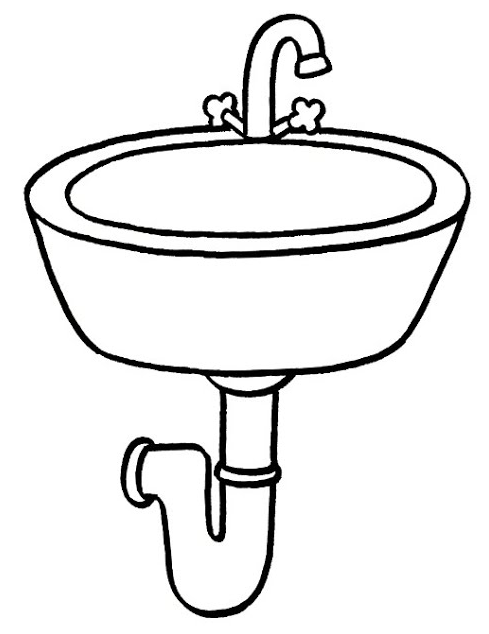

Git Advanced Workshop (EN)
1 Intro
About me
- Tibor Stanko, 35 years
- since 2020 Data Engineer in Zurich Insurance, Bratislava 🇸🇰
- before that, 6 years in academia in 🇫🇷 (PhD, postdoc)
- I enjoy automating boring tasks using Python 🐍
- not a Git guru, but I’ve been using Git daily for over 11 years
- my hobbies: 👨👩👧👦🚲⛰️🎸🎹🍺

Contents of this workshop
2 Git internals
What lies inside Git?

What is Git?
- version control system (VCS) or source control management (SCM)
- in Slovak: systém riadenia verzií
- keeps track of project development history
- useful for teams and for individuals
- not only about code, enables saving arbitrary files (including non-text)
But… what really is Git?
- Git is a content-addressable file system
- This means that the address of a file (key) is defined by its content
- At the core of the Git system is a simple data store that can be accessed using keys
- Key = SHA-1 hash, e.g.,
655a20f99af32926cbf6d8fab092506ddd70e49c
What does Git store?
Mainly:
- objects
- references (or refs)
Objects
- blob
- only content, no metadata (path, name)
- tree
- a tree contains blobs or other trees
- commit
- contains pointers to a tree and another commit (parent)
- tag
- defines an alternative name for another object, which can be used to interact with the object instead of the hash
Each object is identifiable by its SHA-1 hash.
References = pointers to objects
- A branch is not a sequence of commits, but just a pointer to a specific commit
Tip: In PowerShell, you can use gc (alias for Get-Content) instead of the cat command.
Types of Commands
Porcelain:
- high-level commands used by everyday users
commit,log,merge,pull,push,status, …
Plumbing:
- “core git”
- low-level commands used internally by Git (or by power users)
cat-file,commit-tree,hash-object,ls-files,merge-base,rev-parse, …

Demo
- shell
.gittree
.git
├── HEAD ref: refs/heads/main
├── index
├── objects
│ └── 59 blob [test.txt] 'version 1'
│ └── 4dc0e39bc4468ee19c67e65d37b97eb963b68b
│
│
│
│
│
│
│
│
│
│
│
│
│
│
│
│
└── refs
├── heads
|
└── tags
.git ├── HEAD ref: refs/heads/main ├── index ├── objects │ ├── 59 blob [test.txt] 'version 1' │ │ └── 4dc0e39bc4468ee19c67e65d37b97eb963b68b │ ├── 67 tree [blob 594d] │ │ └── 4d4d31b97233152f3be1825cc9e765fa2b2859 │ └── f8 commit [tree 674d] "First" │ └── 0a04ee3dfbeb5eb666ade615abc617c1ea20e3 │ │ │ │ │ │ │ │ │ │ │ │ └── refs ├── heads | └── main f80a... └── tags
.git ├── HEAD ref: refs/heads/main ├── index ├── objects │ ├── 59 blob [test.txt] 'version 1' │ │ └── 4dc0e39bc4468ee19c67e65d37b97eb963b68b │ ├── 67 tree [blob 594d] │ │ └── 4d4d31b97233152f3be1825cc9e765fa2b2859 │ ├── f8 commit [tree 674d] "First" │ │ └── 0a04ee3dfbeb5eb666ade615abc617c1ea20e3 │ ├── f0 blob [test.txt] 'version 2' │ │ └── d983103c610431663d84b3012d1b172f2f52ea │ ├── 37 tree [tree 674d, blob f0d9] │ │ └── 87931e43c8baf51f3ffafc44f6394651a505ca │ └── 53 commit [tree 3787, par. f80a] "Second" │ └── 9f7e662b0fa2ceb0df1dc9332179b06e5cdaec │ │ │ │ │ │ └── refs ├── heads | └── main 539f... └── tags
.git ├── HEAD ref: refs/heads/main ├── index ├── objects │ ├── 59 blob [test.txt] 'version 1' │ │ └── 4dc0e39bc4468ee19c67e65d37b97eb963b68b │ ├── 67 tree [blob 594d] │ │ └── 4d4d31b97233152f3be1825cc9e765fa2b2859 │ ├── f8 commit [tree 674d] "First" │ │ └── 0a04ee3dfbeb5eb666ade615abc617c1ea20e3 │ ├── f0 blob [test.txt] 'version 2' │ │ └── d983103c610431663d84b3012d1b172f2f52ea │ ├── 37 tree [tree 674d, blob f0d9] │ │ └── 87931e43c8baf51f3ffafc44f6394651a505ca │ ├── 53 commit [tree 3787, par. f80a] "Second" │ │ └── 9f7e662b0fa2ceb0df1dc9332179b06e5cdaec │ ├── dc blob [new.txt] 'new' │ │ └── 334bff12fb7d7404c79935fa3ba535c3bb28d0 │ ├── b0 tree [tree 674d, blob f0d9, blob dc33] │ │ └── ea95a512bad604278bcc96e8b8e726b462e010 │ └── 62 commit [tree b0ea, par. 539f] "Third" │ └── e37a96f8f09d0421644817dea320108ceac481 └── refs ├── heads | └── main 62e3... └── tags
.git for a real project
pybrickz/.git │ COMMIT_EDITMSG last commit message edited in the local repository │ config local configuration, applies only to this repository │ description don't worry about it │ FETCH_HEAD remembers what was last fetched from the remote repository │ HEAD pointer to the current branch/commit │ index binary list of paths and SHA-1 hashes, view content with `git ls-files --stage` │ ORIG_HEAD previous state of HEAD, set by commands with potentially dangerous behavior │ packed-refs packed references (heads, tags) ├───hooks […] ├───info […] ├───logs […] ├───objects […] └───refs […]
.git/objects
pybrickz/.git │ […] ├───hooks […] ├───info […] ├───logs […] ├───objects objects - blobs, trees, commits │ ├───00 │ │ 57f7cf16175d94fa850ad30918dffcd4cd850c │ ├───01 │ │ 4daec1e8a05a71852209c4caf9750bfe4717b1 ... │ ├───fe │ │ 1c754ef352dece245b5f7a0d7047b048d7b1d9 │ │ 8a73f88812537678fde89e91c19c87623ff47c │ ├───ff │ │ 7e837bf1dc59b8835767fdcf789e308528498a │ ├───info […] │ └───pack […] └───refs […]
.git/refs
pybrickz/.git
│ […]
├───hooks […]
├───info […]
├───logs […]
├───objects […]
└───refs references - branches, remote branches, tags
├───heads […]
├───remotes […]
└───tags […]
.git/refs/heads
pybrickz/.git
│ […]
├───hooks […]
├───info […]
├───logs […]
├───objects […]
└───refs
├───heads
│ dev
│ main
│ staging
│ ├───bugfix
│ │ bugfix-1 branch created via `git branch bugfix/bugfix-1`
│ │ bugfix-2 branch created via `git branch bugfix/bugfix-2`
│ └───feature
│ feature-A branch created via `git branch feature/feature-A`
│ feature-B branch created via `git branch feature/feature-B`
├───remotes […]
└───tags […]
.git/refs/remotes
pybrickz/.git
│ […]
├───hooks […]
├───info […]
├───logs […]
├───objects […]
└───refs
├───heads […]
├───remotes
│ ├───gh
│ │ main
│ └───origin
│ │ dev
│ │ HEAD
│ │ main
│ ├───bugfix
│ │ bugfix-2
│ └───feature
│ my-awesome-feature-A
└───tags […]
.git/refs/tags
pybrickz/.git
│ […]
├───hooks […]
├───info […]
├───logs […]
├───objects […]
└───refs
├───heads […]
├───remotes […]
└───tags
v1.0.0
v1.0.1
...
v2.6.4
v2.7.0
.git/HEAD
HEADis a pointer to the current branch or commitDETACHED HEADis a situation where HEAD points to a commit that is not the head of a branch
Exercises (1)
- Clone the test repository and switch to the
slovakbranch:
- From the
.gitdirectory, find the file with the hash that theslovakbranch points to. - Compare the hash with the output of the
git rev-parse slovakcommand. - Using the
git cat-file -pcommand multiple times, find out what content is in thehello.pyfile on theslovakbranch.- Hint: use the hash from the previous step as the argument for
-p.
- Hint: use the hash from the previous step as the argument for
Sidebar: How to Unpack Git Objects?
After cloning the repository, all the objects that Git uses are located in the .git/objects directory, but some of them may be packed in the pack directory.
git clone https://github.com/bbrrck/hello.git
cd hello
ls .git/objects
# .git/objects/info
# .git/objects/pack
ls .git/objects/pack
# .git/objects/pack/pack-48cae0e3bd98461308f23caeb2cfcc3df0b34da8.idx
# .git/objects/pack/pack-48cae0e3bd98461308f23caeb2cfcc3df0b34da8.pack
# .git/objects/pack/pack-48cae0e3bd98461308f23caeb2cfcc3df0b34da8.revSidebar: How to Unpack Git Objects? (2)
Manual unpacking of objects is possible using the git unpack-objects command. However, if we use this command on the files from the previous example, nothing will happen. This is because Git will not unpack objects that are already in the repository. Therefore, before unpacking the objects, it is necessary to move them to another part of the repository.
Manual unpacking of objects is not necessary outside of experimentation.
3 Merge vs. Rebase
Merging Changes
In Git, there are two main ways to integrate changes from one branch into another: merge and rebase.
Merging Changes
Merging via merge
- the simplest way to combine branches
- a three-way merge between two branches (e.g.,
mainandfeature) and their latest common ancestor - creates a new commit
Merging via merge
Merging via rebase
- rebasing the
featurebranch onto themainbranch means moving the start of thefeaturebranch to the end of themainbranch - this means that commits from
featurewill be recreated on themainbranch - main advantage: a cleaner, more linear project history with fewer “forks”
Merging via rebase
When not to use rebase?
- never use
git rebaseon public or collaborative branches (especiallymain) - otherwise, part of the history may be changed or even deleted
When not to use rebase?
Demo: merge
git clone https://github.com/bbrrck/hello.git hello-merge; cd hello-merge
git merge origin/french
# Auto-merging hello.py
git merge origin/slovak
# CONFLICT (content): Merge conflict in hello.py
# ... resolve the conflict ...
git add .
git commit
# [main cef4a72] Merge remote-tracking branch 'origin/slovak'Demo: rebase (french)
git clone https://github.com/bbrrck/hello.git hello-rebase; cd hello-rebase
git checkout french
git rebase main
# Successfully rebased and updated refs/heads/french.
git checkout main
git merge french
# Updating 0297280..5f6f019
# Fast-forward
# hello.py | 11 ++++++++++-
# 1 file changed, 10 insertions(+), 1 deletion(-)Demo: rebase (slovak) - conflict
git log --oneline --graph --all
Merge:
* cef4a72 (main) Merge branch 'slovak' |\ | * 163a9c3 (slovak) Add docstring for slovak | * bd67d8d Fix slovak | * 75fcf88 Add slovak * | bc3f86b Merge branch 'french' |\ \ | * | a31caf9 (french) Add docstring for french | * | 6d348f3 Add french | |/ * / 0297280 Add docstring for default |/ * 4b4a8ad Add hello.py * 60d4d94 Initial commit
Rebase:
* ab2fda1 (main, slovak) Add docstring for slovak * 806b97a Add slovak * 5f6f019 (french) Add docstring for french * ea40a3b Add french * 0297280 Add docstring for default | * 163a9c3 Add docstring for slovak | * bd67d8d Fix slovak | * 75fcf88 Add slovak |/ | * a31caf9 Add docstring for french | * 6d348f3 Add french |/ * 4b4a8ad Add hello.py * 60d4d94 Initial commit
git log main --oneline
Merge (10):
cef4a72 (main) Merge branch 'slovak' bc3f86b Merge branch 'french' 0297280 Add docstring for default 163a9c3 (slovak) Add docstring for slovak bd67d8d Fix slovak 75fcf88 Add slovak a31caf9 (french) Add docstring for french 6d348f3 Add french 4b4a8ad Add hello.py 60d4d94 Initial commit
Rebase (7):
ab2fda1 (main, slovak) Add docstring for slovak 806b97a Add slovak 5f6f019 (french) Add docstring for french ea40a3b Add french 0297280 Add docstring for default 4b4a8ad Add hello.py 60d4d94 Initial commit
Exercises (2)
- Clone two copies of the test repository:
- In the
zoo-mergerepository:- Merge the
origin/krokodilandorigin/gorilabranches into the localmainbranch using thegit mergecommand. - Resolve any conflicts that arise in both cases.
- Merge the
(continued on the next slide)
Exercises (2)
- In the
zoo-rebaserepository:- Switch to the
gorilabranch and rebase it onto themainbranch usinggit rebase. Resolve any conflicts that arise. - Switch to the
mainbranch andgit mergethegorilabranch into it. - Switch to the
krokodilbranch and rebase if onto themainbranch usinggit rebase -i. Mark the middle commit asfixup. Resolve conflicts. - Switch to the
mainbranch andgit mergethekrokodilbranch into it.
- Switch to the
- Use the
git logcommand to compare the state of both repositories. - What would change in the result if you skipped step 3b?
Sidebar: Squash Merge
git merge --squash creates a single commit on the target branch.
Usage:
Sidebar: Squash Merge
* cef4a72 (main) Merge branch 'slovak' |\ | * 163a9c3 (slovak) Add docstring for slovak | * bd67d8d Fix slovak | * 75fcf88 Add slovak * | bc3f86b Merge branch 'french' |\ \ | * | a31caf9 (french) Add docstring for french | * | 6d348f3 Add french | |/ * / 0297280 Add docstring for default |/ * 4b4a8ad Add hello.py * 60d4d94 Initial commit
* f3492de (main) Squash french * d23ef42 Squash slovak * 54b75b3 Add docstring for default | * 437cd19 (slovak) Add docstring for slovak | * 5a92065 Fix slovak | * c1344d5 Add slovak |/ | * 0962e07 (french) Add docstring for french | * 7571e67 Add french |/ * de2c4ac Add hello.py * 944ce4e Initial commit
Sidebar: Squash Merge
cef4a72 (main) Merge branch 'slovak' bc3f86b Merge branch 'french' 0297280 Add docstring for default 163a9c3 (slovak) Add docstring for slovak bd67d8d Fix slovak 75fcf88 Add slovak a31caf9 (french) Add docstring for french 6d348f3 Add french 4b4a8ad Add hello.py 60d4d94 Initial commit
f3492de (main) Squash french d23ef42 Squash slovak 54b75b3 Add docstring for default de2c4ac Add hello.py 944ce4e Initial commit
After performing a squash merge, you should always delete the feature branch.
4 Frequent questions and issues
git revert
git revert creates a new version and does not change the repository history.
git reset
git reset --hard changes the repository history and can cause file loss.
reset vs revert vs checkout
| Command | Context | Usage |
|---|---|---|
git reset |
Commit | Discard commits in a private branch or discard uncommitted changes |
git reset |
File | Remove a file from the staging area (from the index) |
git checkout |
Commit | Switch between branches or view old versions |
git checkout |
File | Discard changes in the working directory |
git revert |
Commit | Revert commits in a public branch |
git revert |
File | (N/A) |
How do I revert local changes?
How do I revert changes that have already been pushed?
How do I revert part of a commit?
Note: The changes we add using the git add --patch command are the changes we want to revert, not the changes we want to keep.
How do I rename a local branch?
How do I delete a local and remote branch?
How do I move the last n commits to a new branch?
Moving the last 3 commits from main to a new branch feature:
How do I unstage files from the staging area?
How do I change the message of an already created commit?
If the old commit has already been pushed to the remote, after using git commit --amend you need to push with git push --force or --force-with-lease.
How do I add files to an already created commit?
If the old commit has already been pushed to the remote, after using git commit --amend you need to push with git push --force or --force-with-lease.
How can I reset or revert a file to a specific version?
5 Branching Workflows
In Git, there are many different workflows that differ in how they use branching. In this chapter, we will show some of the most commonly used workflows and their advantages and disadvantages.
Why do we need branching?
- without branching, everyone edits live code → half-baked changes break the system
- developers need isolation to work without stepping on each other
- at the same time, changes need to be integrated back into the main codebase
“Branching is about managing the interplay of isolation and integration.”
— Martin Fowler
Patterns for Managing Source Code Branches (Martin Fowler)
Why do we need branching workflows?
- branching provides the illusion of frozen time - safe isolation for development
- but: branching is easy, merging is harder - eventually the price comes due
- key question: how and when should we integrate our work?
- there is no one-size-fits-all approach: different teams, products, and contexts require different branching approaches.
Patterns for Managing Source Code Branches (Martin Fowler)
What workflows exist?
- Centralized
- Feature branching (FB)
- Trunk-based development (TBD)
- Gitflow
- Forking workflow
- etc.
The Git Workflows Warehouse project contains a catalog of 50 workflows and also a useful list of resources.
Centralized workflow
- all developers work on one branch (
main), no other branches are used
Advantages:
- simple to understand, implement, and use
- perfectly linear history
Disadvantages:
- conflict resolution can be complex
- does not utilize the potential of a distributed system
Centralized workflow (Atlassian)
Feature branching
- development takes place on separate
featurebranches, which are then merged into themainbranch
Advantages:
- new features are developed in isolation, stable
main - allows the use of pull requests, code reviews, collaborative development
Disadvantages:
- potentially many branches
- resolving conflicts in long-lived branches can be complex
- can discourage refactoring due to increased merge conflicts
Git feature branch workflow (Atlassian)
Trunk-based development
- similar to the feature branching workflow, but
featurebranches are short-lived and frequently merged into themainbranch (even several times a day) - feature branches are sometimes not used at all - developers commit directly to the main branch
- suitable in combination with automated testing and deployment (CI/CD)
Advantages:
- code on the main branch is always release ready
Disadvantages:
- requires automated testing and deployment
- requires a mature development team
Trunk-based development
Feature-based deployment can be beneficial for teams that value the isolation of features and are willing to manage the complexities of merging these features back into the mainline. On the other hand, trunk-based deployment is suited for organizations that prioritize rapid integration and releases and have the infrastructure to manage continuous integrations and feature flags.
In recent years, with the rise of DevOps and agile methodologies, there’s been a clear trend towards more frequent integrations and releases. This trend has made trunk-based development, with its emphasis on rapid integration and release, increasingly popular among many tech giants and startups alike. However, as with all methodologies, it’s essential to evaluate the specific needs and capabilities of an organization before adopting a deployment strategy.
Feature-Based Deployment vs. Trunk-Based Deployment by John Nochowitz
Shared branches outside the mainline cause problems (merge hell)
Smaller teams
Larger teams
Gitflow workflow
- extension of the feature branching workflow with
develop,release, andhotfixbranches - the purpose of each branch is clearly defined
main- production branchdevelop- development branchfeature- development of new featuresrelease- preparation for releasehotfix- fixing bugs in the production version
A successful Git branching model (Vincent Driessen)
Gitflow workflow
Advantages:
- all the advantages of the feature branching workflow
- suitable for projects with longer development and regular releases
- potentially good fit for projects with multiple production versions
Disadvantages:
- a large number of branches
- merge hell
Note: Gitflow suits projects with multiple production versions (e.g., customer installations). Single-version web apps benefit more from trunk-based development.
Gitflow workflow
Gitflow is a legacy Git workflow that was originally a disruptive and novel strategy for managing Git branches. Gitflow has fallen in popularity in favor of trunk-based workflows, which are now considered best practices for modern continuous software development and DevOps practices. Gitflow also can be challenging to use with CI/CD.
Gitflow workflow (Atlassian)
Gitflow workflow
The overall flow of Gitflow is:
- A
developbranch is created frommain - A
releasebranch is created fromdevelop Featurebranches are created fromdevelop- When a
featureis complete it is merged into thedevelopbranch - When the
releasebranch is done it is merged intodevelopandmain - If an issue in main is detected a
hotfixbranch is created frommain - Once the
hotfixis complete it is merged to bothdevelopandmain
Forking workflow
- developers do not have direct access to the main repository but create a fork (copy) of the repository they work on
- commonly used in open-source projects

Key Takeaways
- Branching is easy, merging is harder - always plan integration before branching; branches diverge over time
- Integration frequency drives quality - frequent merges reduce complexity, risk, and integration fear; enable refactoring and improve code health
- Modern best practice favors trunk-based development - elite teams integrate frequently with CI/CD; choose workflow based on context (trunk-based for single-version apps, Gitflow for multiple production versions)
Based on Patterns for Managing Source Code Branches (Martin Fowler) and State of DevOps Report
6 Pull Requests
What is a pull request?
- by creating it, we request the project maintainer to pull our changes and incorporate them into the project
- it can be created within workflows such as feature or forking, but not within the centralized workflow
- it allows developers to discuss the change and perform code reviews
Examples:
Making a Pull Request (Atlassian)
7 CI/CD s pomocou Gitu

Čo je to CI/CD?
- CI = continuous integration
- CD = continuous delivery
8 SSH Authentication
Creating an SSH key
Copying the SSH key to the clipboard
Powershell
Command Prompt
9 What We Didn’t Learn
- hooks
- submodules
- pruning
- cherry picking
- LFS = Large File Storage
- garbage collection (
git gc)
10 Useful Resources
Links
sk
- video course by Yablko: Git a Github od základov
- video course on the Informatika s Mišom channel
- course Základy softvérového inžinierstva at FEI TUKE
- part 2: Systémy pre správu verzií
- part 3: Práca s vetvami v systéme Git
Links
en
- Git cheat sheet
- Pro Git, freely available official book, also available in Czech
- git - the simple guide
- Git tutorials from Atlassian
- Coursera: Introduction to Git and GitHub
- Missing Semester of CS Education, Lecture 6: Version Control (git)
- Learn how Git works internally with simple diagrams
- Markdown Guide
- Learn Markdown in 5 minutes
Git Glossary
| en | sk |
|---|---|
| branch | vetva |
| clone | naklonovanie repozitára |
| commit | záznam |
| commit message | popis záznamu |
| conflict | konflikt medzi verziami |
| conflict resolution | riešenie konfliktov |
| diff | rozdiel medzi verziami |
| merge | zlúčenie vetiev |
| en | sk |
|---|---|
| pull | stiahnutie vzdialených zmien |
| push | odoslanie lokálnych zmien |
| repository | repozitár, úložisko |
| remote | vzdialený repozitár |
| snapshot | snímka |
| staging area | prípravná oblasť (tiež index) |
| status | stav repozitára |
| version | verzia |